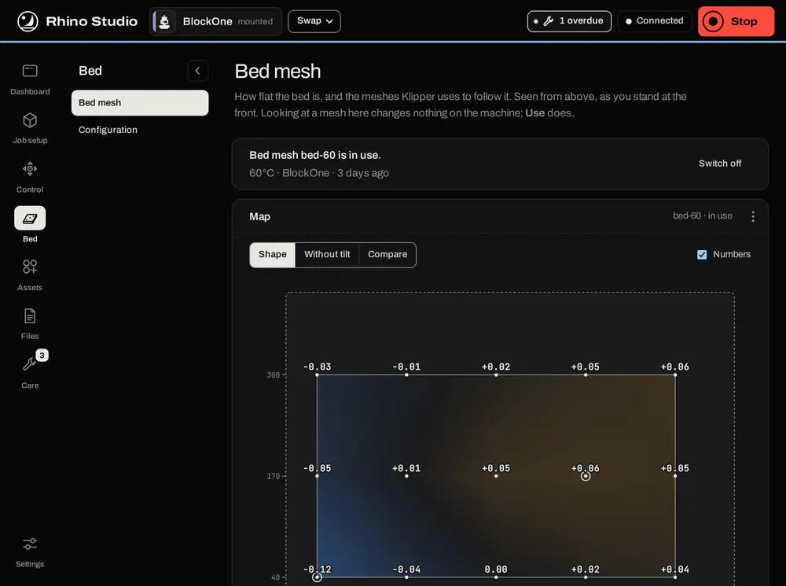
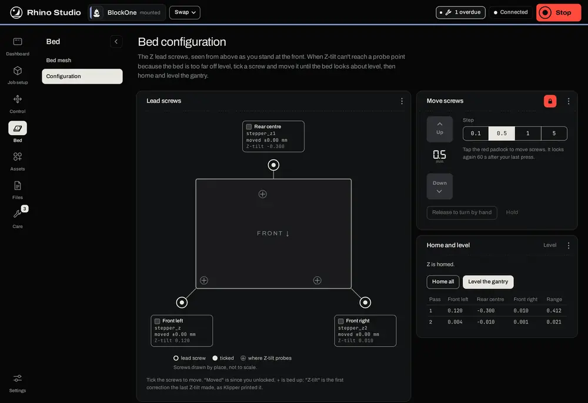
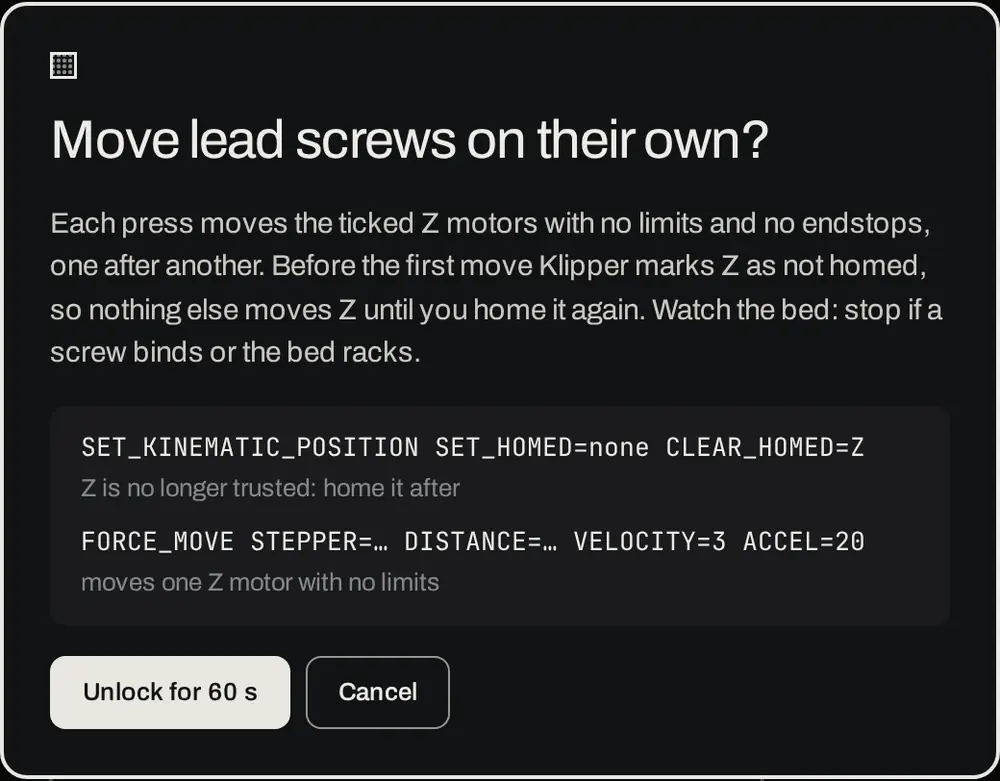
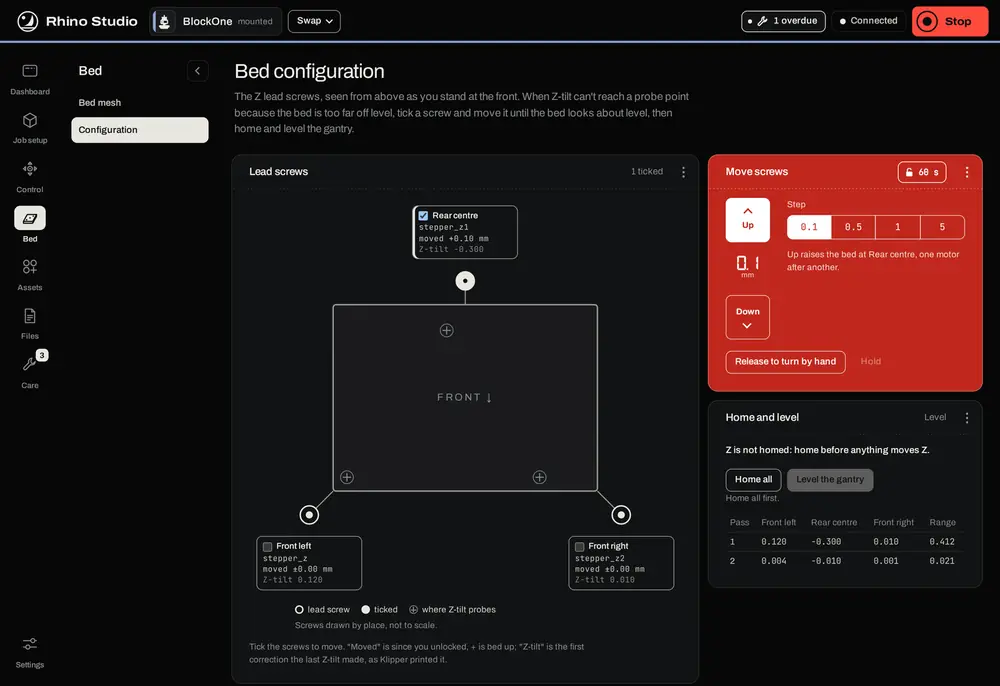
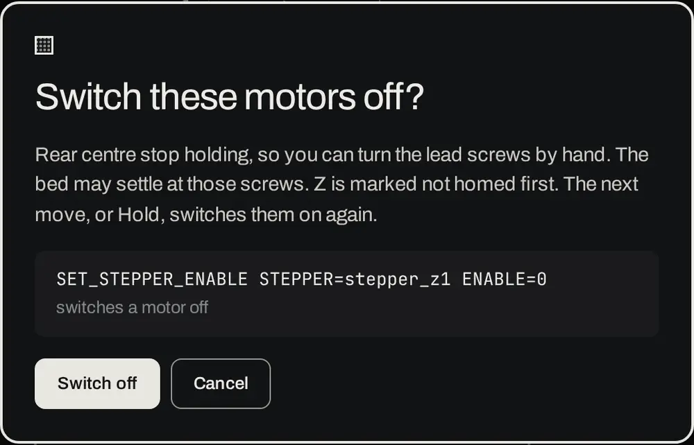
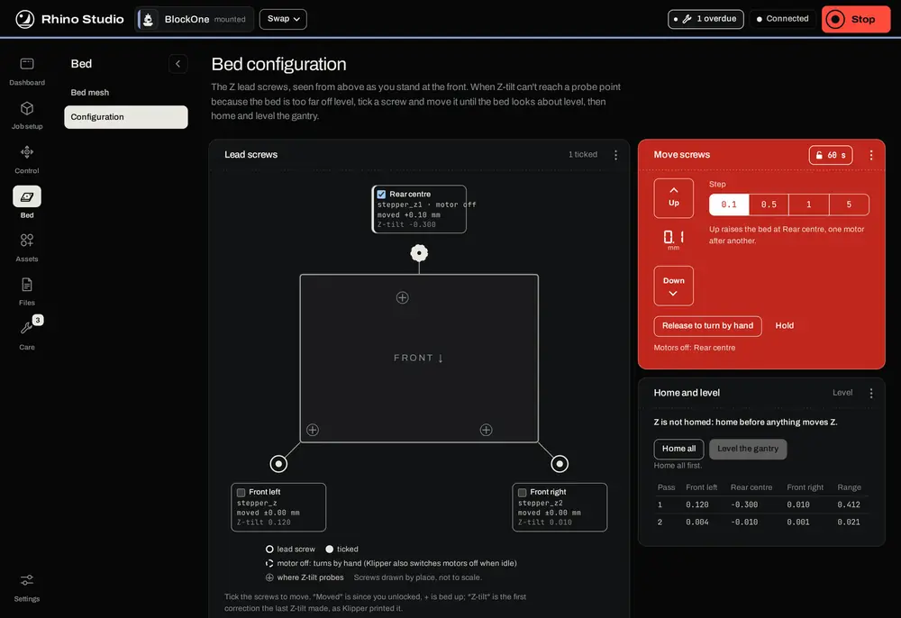
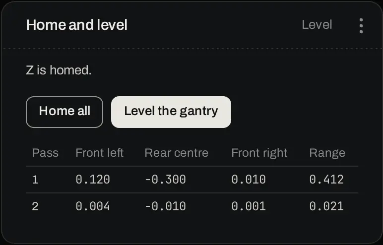

Bed on Rhino Studio's left rail has two pages, chosen from its side menu. Bed mesh shows how flat the bed is and the meshes Klipper follows. Configuration moves single Z lead screws when the bed is too far off level for Z-tilt to fix.
The page shows the bed from above, as you stand at the front. The top line says which mesh Klipper is using, with its bed temperature, the head that probed it and when; Switch off stops moves from following it. Looking at a mesh here changes nothing on the machine. Only Use does.

Z_TILT_ADJUST).While a job runs, the page only shows meshes: a print loads its own mesh at the start.
The Rhino's bed rides on three Z lead screws, each with its own motor. Z_TILT_ADJUST (Level the gantry) probes the bed and turns each screw until the bed is level. If the bed is too far off to start with, Z-tilt stops with Move out of range. This page lets you bring the bed close by eye first, by moving the screws you choose. Nothing on this page is saved.

The Lead screws panel shows the bed from above with each lead screw just off its corner or edge: front left, rear centre and front right on the Rhino. The screws are drawn by place, not to scale. The crosses are where Z-tilt probes. Each screw's card shows its name, its motor (stepper_z, stepper_z1 …), how far it has moved since you unlocked, and what the last Z-tilt asked of it. Tick a screw's box to choose it.
Tick the screw or screws to move.
In Move screws, press the padlock. Studio asks once and shows what will run.

Press Unlock for 60 s. The panel turns red.
Choose a step: 0.1, 0.5, 1 or 5 mm. Up raises the bed at the ticked screws and Down lowers it, one motor after another. Each card shows how far its screw has moved (+ is up).
Repeat until the bed looks level by eye. The padlock locks again 60 seconds after your last press, and when you leave the page, a job starts, or the tool is swapped or changed.

These moves have no limits and no endstops. Watch the bed while you press, and if a screw binds or the bed racks, press Stop. The first move marks Z as not homed and drops the saved park height, so nothing else moves Z until you home again.
Release to turn by hand switches the ticked motors off, after asking, so you can turn their lead screws by hand. The bed may settle at those screws. Hold, or the next move, switches them back on.

A screw whose motor is off is drawn with a dashed ring, and its card says motor off. Klipper also switches every motor off after the machine has been idle for a while, so motor off on all three screws is normal after a pause.

Home all homes every axis. Level the gantry runs Z_TILT_ADJUST. It needs a print head mounted and confirmed, because it probes with the head, and X, Y and Z homed. Both ask first.
The table shows each pass of the last Z-tilt: the correction each screw got and the range left across the probe points. Z-tilt repeats until the range is within its tolerance. If it stops with an error, the panel shows the error instead. Before any Z-tilt since the Rhino restarted, the panel reads NO Z_TILT PERFORMED SINCE RESTART.

On Configuration, look at the last Z-tilt's numbers on the cards: the screw with the largest correction is the one furthest off.
Tick that screw, unlock and move it until the bed looks level by eye, or release it and turn it by hand, then press Hold.
Press Home all, then Level the gantry. Repeat from step 1 if it stops again.
Once Z-tilt finishes, make a new bed mesh if the old one was taken before the bed was moved.